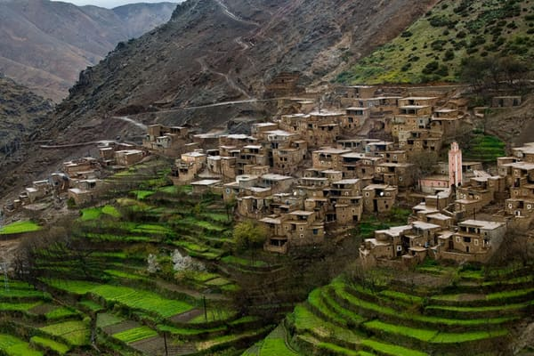

Location avec chauffeur
Vous voyagez en groupe et vous préférez laisser conduire. Nous mettons à votre disposition un véhicule et son chauffeur à la journée, pour vos...
Voir le detail
Marrakech et tout le Maroc, depuis 2007
Navette aeroport, taxi prive, minibus avec chauffeur, excursions et circuits. Vous reservez a distance et vous connaissez le prix avant de monter a bord.
Le prix est communique avant le depart, net a payer. Aucune majoration de nuit.
Nous suivons votre numero de vol. Si l avion a du retard, le chauffeur patiente.
Chaque vehicule part avec son chauffeur. Assurance des passagers comprise.
Agrement du ministere de l equipement, du transport et de la logistique, decision PCT/ATT.T/8/2012.
Quatre facons de circuler a Marrakech et dans tout le Maroc, toujours avec un chauffeur.
Vous voyagez en groupe et vous préférez laisser conduire. Nous mettons à votre disposition un véhicule et son chauffeur à la journée, pour vos...
Voir le detail
Visitez la médina de Marrakech, place Jamaa Lefna, et monuments historiques, une balade pour découvrir l’histoire riche de la ville...
Voir le detail
Un circuit classique de deux jours et une nuit vers Zagora et les dunes de Tinfou depuis Marrakech en passant par Ait Ben Haddou, Ouarzazate et la...
Voir le detail
Un chauffeur vous attend à l'aéroport Marrakech-Menara et vous conduit directement à votre hébergement. Le tarif est par véhicule, pas par personne,...
Voir le detailDepart depuis votre hebergement le matin, retour le soir. Le tarif s entend par vehicule, jamais par personne.
Visitez la médina de Marrakech, place Jamaa Lefna, et monuments historiques, une balade pour découvrir l’histoire riche de la ville...
Voir le detail
Une aventure inoubliable pour découvrir les étendues du désert d'Agafay et admirez un coucher de soleil...
Voir le detail
Excursion d’une journée au départ de Marrakech pour découvrir l’ancienne médina d’Essaouira, son ancien port portugais et sa belle...
Voir le detail
Un tour dans la vallée de l’Ourika et ses 7 cascades en une journée avec une randonné facile au pied de l’Atlas et au bord de la rivière de...
Voir le detail
En destination du sud de Marrakech un passage par le col de Tizi N'Tichka à 2260 m d'altitude vous permettra de joindre la fabuleuse Kasbah d'Ait Ben...
Voir le detail
Un circuit de rêve au départ de Marrakech pour visite du village d’Asni, Tahanaout avant d’arriver à la belle vallée d’Imlil située au pied du mont...
Voir le detailDu van a l autocar de 48 places, recente et climatisee. Chaque vehicule part avec son chauffeur.
4 a 7 places

14 a 18 places

29 a 48 places
Seminaires, congres, mariages et foires. Une flotte qui peut deplacer plus de 1000 passagers simultanement, un plan de mouvement etudie etape par etape, des interlocuteurs joignables 24 h sur 24.
Notre offre evenementielDe deux a cinq jours vers Merzouga, Zagora ou les villes imperiales. Vous choisissez les etapes.

Un circuit classique de deux jours et une nuit vers Zagora et les dunes de Tinfou depuis Marrakech en passant par Ait Ben Haddou, Ouarzazate et la...
Voir le detail
Excursion à Ouarazazate et Ait Ben haddou et une balade dans les gorges de Toudra et de Dadès, pour découvrir les belles dunes de sable fin de...
Voir le detail
Découvrir en deux jours et une nuit les gorges de Dadès et les gorges de Toudra connues par ses hautes falaises vertigineuses et ses parois hautes de...
Voir le detail
Un voyage de deux jours et une nuit pour découvrir la beauté de l’Atlas, la rivière et le lac de Bin El Ouidane, en passant par les cascades d’Ouzoud...
Voir le detail
Un circuit magique pour découvrir l’histoire des villes impériales du Maroc, sites historiques, palais majestueux, anciennes médinas, divers cultures...
Voir le detailTrans Marrakech (Anaconda Tours - Trans Marrakech SARL) organise votre transport à Marrakech et dans tout le Maroc depuis 2007. Navette aéroport, taxi privé, location de minibus avec chauffeur, excursions à la journée, circuits dans le désert : vous réservez à distance et vous connaissez le prix avant de monter à bord. Société de transport agréée par le ministère de l'équipement et du transport (décision PCT/ATT.T/8/2012), notée 4,9 sur 5 par les voyageurs qui l'ont réservée avant vous.
Le chauffeur vous attend à la sortie du terminal, une pancarte à votre nom à la main, et vous conduit à votre hôtel ou votre riad. Le tarif est fixe, annoncé à l'avance, net à payer, sans majoration de nuit. Si votre vol a du retard, nous suivons son numéro et le chauffeur patiente. Aucun frais en plus.
Un van, un minibus de 14 à 18 places ou un autocar, selon la taille de votre groupe, avec un chauffeur qui connaît la région. Vous fixez le programme de la journée et vous vous arrêtez où vous voulez. Le carburant est à votre charge ou compris selon la formule ; les frais du chauffeur sont toujours inclus.
Vallée de l'Ourika, Imlil, cascades d'Ouzoud, Essaouira, Aït Ben Haddou, désert d'Agafay. Départ depuis votre hébergement le matin, retour le soir. Le tarif s'entend par véhicule, jamais par personne, quelle que soit la catégorie réservée.
De deux à cinq jours vers Merzouga, Zagora, M'Hamid ou les villes impériales. Vous choisissez les étapes, nous organisons les routes, les temps de trajet et l'hébergement. Circuit personnalisé ou formule prête à réserver, à votre convenance.
Indiquez votre trajet ou votre programme, vos dates et le nombre de passagers. Nous vous répondons avec un devis au tarif fixe. Une fois le transport confirmé, vous recevez le nom du chauffeur, la marque du véhicule et son immatriculation.
---
© Trans Marrakech - Anaconda Tours SARL, transport touristique à Marrakech depuis 2007. Mentions légales.